Make it intuitive.
Whether it's a game screen or a complex data view, the interface should help people feel oriented.
From enterprise products to cloud architecture, intelligent products, and playful digital worlds my work connects what's technically possible with what feels intuitive to people.

00 / The approach
I started by writing code to automate artists work. I went on to build systems used by the public, guide engineering teams, and create products under my own company. The throughline has always been the same.
Whether it's a game screen or a complex data view, the interface should help people feel oriented.
Accessible patterns, pragmatic architecture, good testing, and thoughtful automation make ideas last.
Connect creative ambition with actual needs, useful outcomes, and the discipline to ship and iterate.
01 / Selected work
Media and disciplines. what I was exploring, why it matters, and how it connects to the bigger story.

A playful world where product design and engineering meet.
Blobby’s Woodland Wonder represents the most visible side of the company I founded: a product designed to be experienced, not merely explained. Published by ListPull, the mobile game brings together approachable puzzle mechanics, cheerful characters, richly layered environments, and small moments of discovery. Players match animals, sort stacks, merge houses, and explore a growing woodland world. I include it as an example of founder-led product work that meaningfully crosses digital media, software delivery, and audience experience. The central idea is simple: thoughtful technical execution should disappear behind an inviting interaction, while thoughtful systems make room for play, exploration, and curiosity.
My context: ListPull founder / product engineering

One cohesive universe, several ways to play.
The world of Blobby extends beyond a single puzzle board. Its different modes introduce matching, animal sorting, village building, and navigation between imagined wildlife regions. I selected this game-world study to communicate the importance of coherence across distinct experiences: visual cues help players recognize objects, themed locations provide context, and repeatable interactions establish familiarity. The public gameplay imagery illustrates the intersection of art direction, experience design, and technical product thinking at ListPull. Rather than claiming individual authorship of every visual asset, this piece publicly documents the kind of integrated creative product I help bring into the world through the company.
My context: ListPull company work
Connecting curiosity about nature to digital experiences.
ListPull now presents wildlife-focused media alongside games and interactive experiences. That combination matters to me because it treats storytelling and software as complementary disciplines. A viewer might discover an animal through a short-form clip, encounter the same sense of wonder in a game, and continue exploring through a lightweight website. This selection demonstrates the connective tissue of a digital brand: clear narrative, thoughtful recognizable identity, distribution across channels, and accessible pathways into deeper engagement. The media itself is company-published work; the portfolio examines its direction and platform experience rather than assigning myself unverified credit for individual wildlife footage or edits.
My context: Founder / cross-platform product direction

Turning a complex collection of feeds into an interface people can read.
A market analytics portal is only useful when its information can be interpreted quickly and confidently. At ListPull, my engineering work brings React and Angular interfaces together with PHP services, WordPress-backed authentication, multiple external data feeds, and time-series visualizations. This portfolio illustration translates that work into an interface study rather than exposing internal screens or customer information. It emphasizes visual hierarchy, consistent components, useful context, and the infrastructure behind responsive data views. The point of the piece is not a trading recommendation or a performance claim; it is to show how front-end craft and back-end architecture become one understandable product.
My context: Senior lead engineer · ListPull

A forecast is a model, not a promise.
This piece visualizes the forecasting service I engineered for ListPull using Node.js and ARIMA models. The real engineering work includes per-symbol model caching and the delivery of intraday and daily projections. The animation created for this portfolio separates historical observations from projected movement, deliberately showing uncertainty rather than suggesting certainty. Its message is as much about communication as mathematics: the user should know where observed data ends and a model begins. In a field crowded with overconfident charts, I value honest labels, appropriate caveats, and systems that remain usable when external providers enforce rate limits or data availability changes.
My context: Forecast service engineering · ListPull

Natural language as a doorway, not a substitute for evidence.
My natural-language research agent at ListPull combines Ollama, PostgreSQL, third-party API retrieval, and streamed analytical responses. It is intended to bridge the gap between what a user wants to know and the structure of the underlying data. This interface concept illustrates a request moving from language into retrieval and a readable result; it is not a live demonstration or a captured customer session. I am interested in agent experiences that expose their source material, remain grounded in real inputs, and handle ambiguity carefully. The piece communicates a direction for computing: AI that makes complex tools accessible without hiding their limitations.
My context: AI product engineering · ListPull

Supporting decisions through structured, explainable retrieval.
While leading engineering work at Accenture, I helped integrate a clinic recommendation capability into an existing React application for Bristol Myers Squibb. The supporting AWS architecture used Step Functions, Lambda, PostgreSQL, Bedrock embeddings, and OpenSearch semantic ranking. This original architecture study communicates the decision path rather than revealing client screens or private clinical information. It follows signals through processing, semantic retrieval, and ranked results, emphasizing the disciplined orchestration required behind a simple user interaction. For me, the work illustrates where emerging AI has practical value: making relevant information easier to find while preserving boundaries around sensitive contexts and human judgment.
My context: Software engineering manager · Accenture

Connecting services so people spend less time navigating them.
The hardest enterprise experiences are often the transitions between systems. At Accenture, I worked on Department of Health contact-center integrations connecting Salesforce with AWS Connect and associated AWS services. Related architecture work included digital vaccination-record access and disease-surveillance workflows. This diagram summarizes those patterns without recreating a government interface or exposing sensitive information. It shows how events, secure APIs, automated routing, and operational records can form a more connected service experience. The underlying theme is service design at scale: reliability, privacy, and thoughtfully chosen automation help staff focus on people rather than repetitive handoffs between disconnected tools and manual processes.
My context: Application architect / senior engineer · Accenture

Better interfaces are part of making public information useful.
At BAE Systems, I helped modernize the public-facing Bureau of Labor Statistics website under a Department of Labor contract. My work involved reusable React components, Highcharts visualizations, government data APIs, automated CMS workflows, and testing with Selenium and HtmlUnit. This original visual study is not an official BLS screenshot; it communicates the kind of accurate public information experience the modernization supported. Clear charts, consistent page patterns, accessible interactions, and dependable publishing matter because people rely on these resources to understand real conditions. This work helped shape my belief that good engineering is also a form of public communication and stewardship.
My context: Lead web developer · BAE Systems

The beginning: seeing repetitive creative work as a design problem.
Before leading cloud and AI projects, I worked close to production artwork at Champion Teamwear. I automated Adobe Illustrator and Photoshop workflows with JavaScript, generating vector assets such as SVG, XML, and FXG. That experience changed how I approached software: I began by understanding a creative process, noticing friction, and building tools that removed it. This newly drawn vector piece represents that process rather than a recovered client design. It closes the portfolio by returning to its origin story. Those same instincts still remain central to my work: respect the craft, simplify the workflow, and let technology expand creative capacity.
My context: Technical application specialist · Champion Teamwear
02 / The journey
My path hasn't been a straight line from developer to manager. Every chapter widened the kind of problems I could solve—and reinforced why I keep building hands-on.
At Champion Teamwear, I used JavaScript to automate Adobe Illustrator and Photoshop production. Digital media taught me to design technology around creative people.
I built payment and integration systems at Hardgainz, then founded ListPull in 2017 to work across front-end, back-end, mobile, cloud, and product development.
At BAE Systems, I helped modernize Bureau of Labor Statistics web experiences. Accessibility, reliable data visualization, and publishing workflows became essential.
At Accenture, I grew from senior engineer into architecture and management, leading cloud integrations, public health workflows, and enterprise GenAI delivery.
Today I lead software engineering at ListPull, joining analytics, forecasting, research agents, and interactive experiences with the product perspective earned along the way.
My Transition
From leading engineering teams, designing cloud systems, integrating AI, and now choosing to manage the products.
Where I'm going
My career goal is to lead multidisciplinary engineering and product teams delivering useful, accessible experiences with cloud-native services, human-centered design, responsible GenAI, data intelligence, and emerging interactive interfaces. I want to connect research and experimentation with sound architecture, privacy-aware practices, and products people genuinely enjoy using.
03 / About me
I'm Jay Monga, A senior full-stack software engineer, former engineering manager, and founder of ListPull. My background combines a B.S. in Digital Media and Web Technology from the University of Maryland Global Campus with more than a decade of practical product and enterprise engineering.
I move comfortably between a design conversation, a React interface, a data model, a cloud architecture diagram, and a team delivery plan. I don't see those as separate jobs; they're different parts of making an idea real.
Based in Germantown, Maryland · Open to conversations about engineering, products, and creative technology.
04 / Get in touch
Good products start with a conversation. Whether it's a thoughtful engineering challenge, a team to build, or a creative idea worth prototyping, I'd like to hear about it.